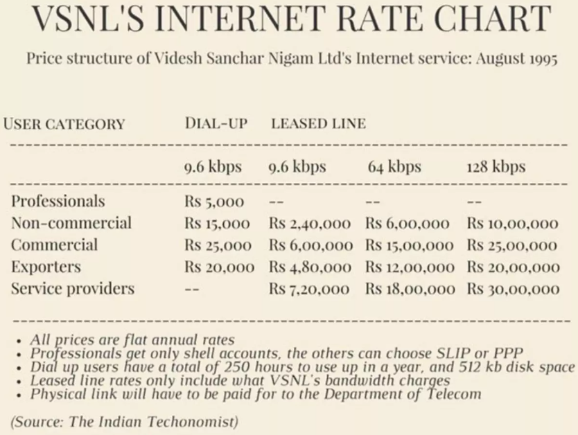
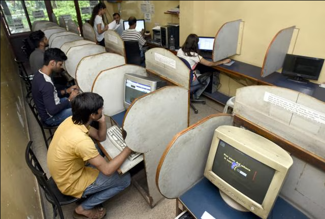
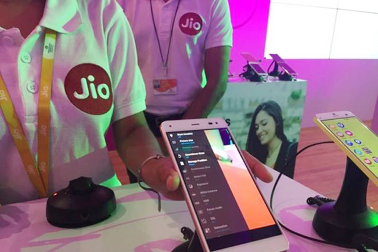
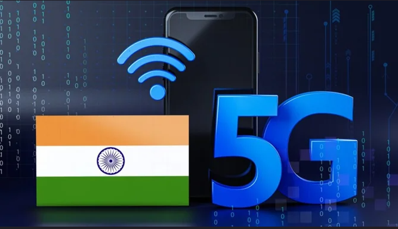

History of the Internet in India
Early Developments (1980s-1995)
India's internet journey began in the 1980s with networking initiatives led by the National Informatics Centre (NIC). In 1986, the Education and Research Network (ERNET) connected universities and research institutions using TCP/IP and X.25 protocols.
During this period, internet access was limited to scientists and academics.

Commercial Internet Launch (1995)
On August 15, 1995, Videsh Sanchar Nigam Limited (VSNL) introduced India's first dial-up internet service. Early users had speeds of just 9.6 kbps, and internet costs were high.
By 1998, the government allowed private Internet Service Providers (ISPs) to operate, breaking VSNL’s monopoly.

Internet Growth (2000s)
The early 2000s saw a shift from dial-up to broadband connections like DSL and cable internet. Cybercafés became popular, allowing more people to access the internet.
In 2004, broadband was officially defined as speeds of 256 kbps and above.

The Mobile Internet Revolution (2010s-Present)
The launch of 3G (2010) and 4G (2016) led to a massive increase in mobile internet users. In 2016, Jio disrupted the market by offering free data services, accelerating internet adoption.
Today, India has over 900 million internet users, making it the second-largest internet market in the world.

Current Trends
The launch of 5G in 2022 promises faster speeds and better connectivity. Government programs like Digital India aim to expand internet access in rural areas.
